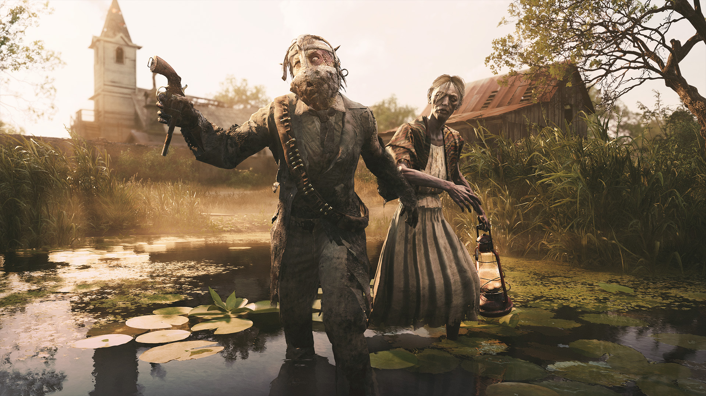

Cowboys & Zombies
While Hunt is yet another FPS - there are a few things that take it to the next level & make it my favorite video game. The setting is late 1800s in the Lousiana bayous, zombies have infested the world & monsters roam freely.
PvP AND PvE
Hunt has zombies, monsters of all types, and even 'bosses' that you must slay and then loot their bounty then extract safely.
Not only zombies though, there are other Hunters on the map. Hunters are enemy players also vying for their chance at the loot!
Friendship & Camaraderie
My absolute favorite aspect of Hunt is the community. I've met some of the most fantastic folks in the harsh bayou, and had many a friendship grow stronger. It's a fun place, despite the horror-style theme!